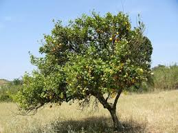
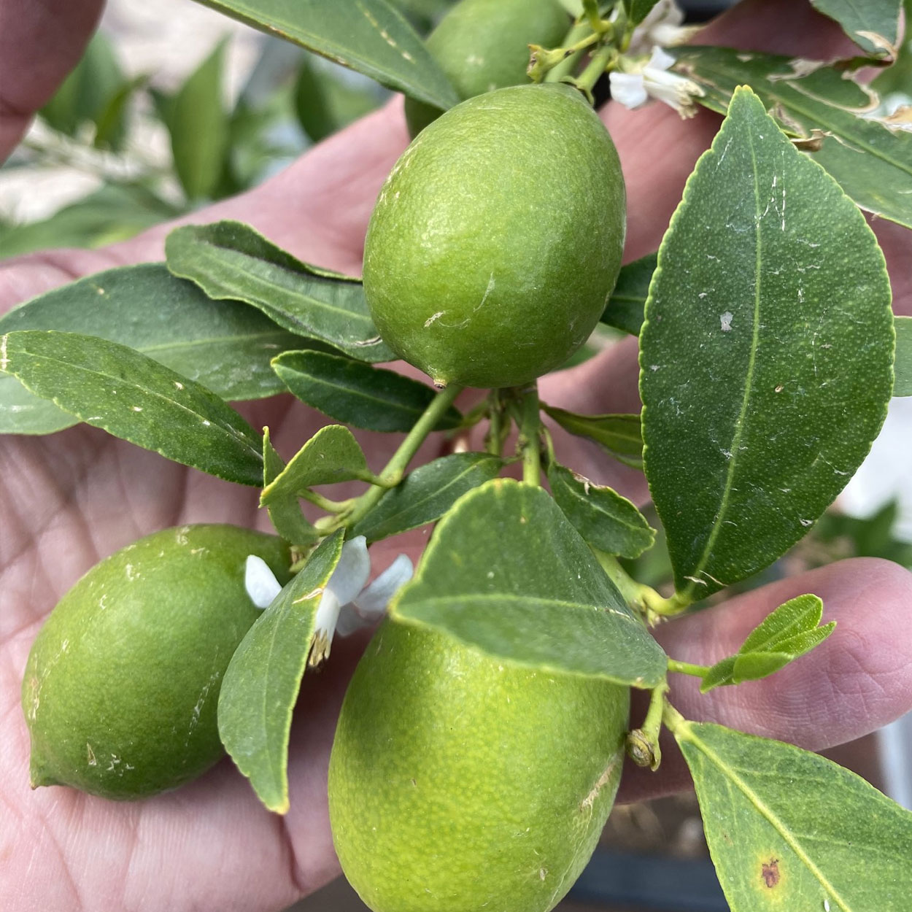
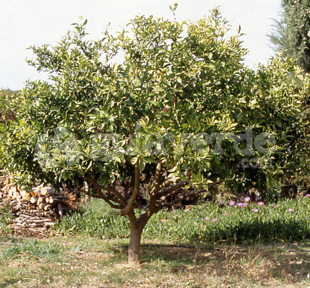
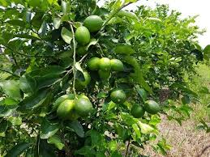
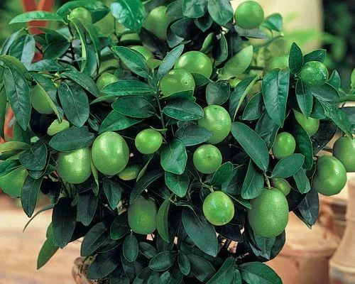

Árbol de Limón
El árbol de limón es un árbol frutal muy común en climas cálidos. Produce frutos ricos en vitamina C.






Tiempo de crecimiento: Aproximadamente 3 años.
Clima ideal: Cálido.
Cuidados: Sol directo, riego moderado y protección contra heladas.
Importancia: Uso alimenticio y medicinal.
⬅ Regresar